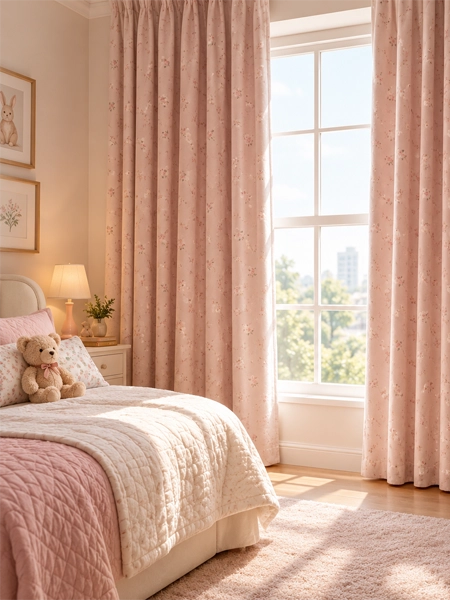

Kids room curtains in Bangladesh
Kids room curtains in Bangladesh | Curtain Canvas
A child's room does a lot more than hold a bed. It is where they sleep, study, play, read, and dream. The curtains in that room affect all of it: how well they sleep at nap time and at night, how bright the room feels for homework, and whether the space feels like theirs.
At Curtain Canvas, we design and make kids' room curtains in Bangladesh around your child's actual room: its windows, natural light, furniture, color scheme, and the age and habits of the child who uses it. From consultation and precise measurement to custom tailoring and professional installation, one team looks after every step.
Book a Free ConsultationWhat kids' room curtains need to do
Good kids' room curtains balance comfort, safety, and personality rather than choosing only one. A child's room places different demands on curtains than an adult's room:
- Support sleep. Children often need a darker room for naps and early bedtimes, especially when it is still bright outside.
- Manage daylight for play and study. The room should stay bright enough for homework and reading without harsh glare.
- Fit the room's personality. Color and pattern can make the space feel cheerful, calm, or creative.
- Stay practical. Fabrics should be sturdy, easy to maintain, and hold up to busy days.
- Grow with the child. A room that suits a toddler today should be easy to adapt as they grow into a schoolchild and a teenager.
Kids room curtain styles we offer
From playful prints to cozy blackout options, our kids room curtain collection offers fun, practical styles that grow with your child and brighten every corner of their space.

Playful Pattern and Color Curtains
Best for toddlers and younger children. Soft colors, gentle patterns, and fun themes can make the room feel welcoming and full of character.
Custom-Designed Curtains
For bunk-bed rooms, shared rooms, study nooks, balcony doors, or unusual windows, we plan the curtain from scratch. See our customized curtain solutions.Explore curtain styles
Choosing fabric for a kids' room in Bangladesh
Bangladesh's strong sun, humidity, and monsoon season should guide the choice. Use this as a starting point:
| Your priority | What to look for |
|---|---|
| Dark room for naps and sleep | Blackout-lined or tightly woven fabric |
| Bright room for study and play | Light-filtering or sheer fabric |
| Comfort in hot, humid months | Breathable, lightweight fabrics with good airflow near the window |
| Easy upkeep | Fabrics that handle regular care and hold their shape |
| Durability | Firmly stitched, well-finished fabric that copes with daily use |
| A long-lasting design | Neutral base tones with color added through accessories and bedding |
Matching curtains to your child's room
Choose the curtain as a calm base and let the child's bedding, rug, and wall art carry the playful color. That way, the room can change as the child does without replacing the curtains.
Toddler and nursery:
Soft pastel shades, gentle patterns, and blackout lining for restful naps.
Primary-school child:
Cheerful colors with a layered setup so the room is bright for play and homework and dark for sleep.
Teenager:
Clean, neutral, or deep tones that feel more grown-up and suit a study desk.
Shared room:
A balanced, neutral design that works for both children, with layered curtains so light can be adjusted for each.
Study corner:
Light-filtering fabric to reduce glare on books and screens.
Safety and practical details
Safety matters more in a child's room, so we plan these details carefully with you:
- Hardware placement: Rods and tracks are fixed firmly and positioned with the room's furniture and the child's reach in mind.
- Cords and fittings: We advise on curtain styles and operating options that avoid loose, dangling cords near cots, beds, and play areas.
- Curtain length: We confirm the length so that curtains do not become a tripping or climbing hazard.
- Easy operation: Smooth-running tracks make it easier for parents and for older children to open and close the curtains.
- Light leakage: We plan the fullness and side overlap so blackout curtains work properly for sleep.
- Easy upkeep: We recommend fabrics that suit regular cleaning and everyday use.
How Curtain Canvas makes your kids' room curtains
From the first measurement to the final hang, every kids’ room curtain at Curtain Canvas is custom-made to your window size, fabric choice, and your child’s style, so it looks great and fits perfectly.
Consultation:
Share your child's room, their age, and your needs. See our curtain consultancy service.
Onsite visit and fabric presentation:
We bring catalogues and swatches and can arrange a trial hanging so you can see the fabric in the room's own light.
Precise measurement:
Every window and fitting area is measured for the right dimensions.
Custom tailoring:
Your curtains are stitched and finished to the approved design.
Professional installation:
We fit the rod or track and check alignment, movement, and curtain fall beforehand.
After-sales support:
Help with fitting and adjustments after installation.
Choose curtains from Curtain Canvas for your kids' room
Choose Curtain Canvas for your kids room and get safe, durable, made-to-measure curtains that make their space fun, cozy, and easy to care for.
Make an Appointment- Interior design-focused approach: We choose curtains that suit the room's furniture, colors, and proportions.
- Wide choice: 120+ fabric and style options.
- Made to measure: Every curtain is planned for your window, not adapted from a standard size.
- One team, start to finish: consultation, measurement, tailoring, installation, and support.
- Experience you can check: 5+ years of curtain expertise, 2,000+ windows styled, and a 4.9/5 client satisfaction rating. See our client reviews and completed projects.
Kids Room Curtains Across Bangladesh
We serve homes and apartments across Dhaka and other major cities. Explore our Dhaka service area and the wider Bangladesh service area.
FAQs about kids' room curtains
For most children's rooms, layered curtains work best: a sheer layer for soft daytime light and a blackout layer for naps and bedtime. If the room only needs to be dark for sleep, blackout-lined curtains are a good choice.
Blackout curtains are helpful for naps, early bedtimes, and light sleepers. If the room is also used for play and study, a layered setup lets you keep it bright by day and dark at night.
Choose a fabric that is durable, easy to maintain, and comfortable in Bangladesh's climate. Lined fabrics suit sleep, and light-filtering or sheer fabrics suit play and study. A consultant can recommend the best fit once they see the room.
Soft pastels and gentle patterns suit younger children. Neutral and calm tones last longer and suit older children. Many parents choose a neutral curtain and add color through bedding, rugs, and wall art.
Safety depends on the curtain style, hardware, and installation. We advise on firm fixing, suitable lengths, and options that avoid loose cords near beds and play areas. You should always keep cots and beds away from curtain cords and fittings.
Yes. All our kids' room curtains are made to measure, based on your actual window and fitting dimensions, fabric choice, and design.
Yes. Our team measures, installs the rod or track and checks the finish before handover.